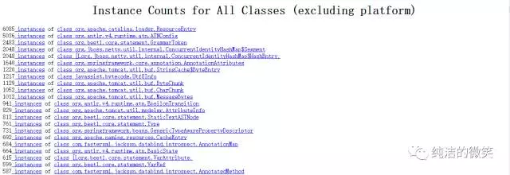
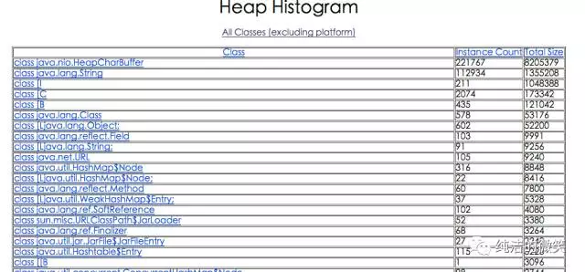

运用jvm自带的命令可以方便的在生产监控和打印堆栈的日志信息帮忙我们来定位问题！虽然jvm调优成熟的工具已经有很多：jconsole、大名鼎鼎的VisualVM，IBM的Memory Analyzer等等，但是在生产环境出现问题的时候，一方面工具的使用会有所限制，另一方面喜欢装X的我们，总喜欢在出现问题的时候在终端输入一些命令来解决。所有的工具几乎都是依赖于jdk的接口和底层的这些命令，研究这些命令的使用也让我们更能了解jvm构成和特性。
Sun JDK监控和故障处理命令有jps jstat jmap jhat jstack jinfo下面做一一介绍
jps
JVM Process Status Tool,显示指定系统内所有的HotSpot虚拟机进程。
命令格式
option参数
其中[option]、[hostid]参数也可以不写。
示例
28920 org.apache.catalina.startup.Bootstrap start
11589 org.apache.catalina.startup.Bootstrap start
25816 sun.tools.jps.Jps -l -m
jstat
jstat(JVM statistics Monitoring)是用于监视虚拟机运行时状态信息的命令，它可以显示出虚拟机进程中的类装载、内存、垃圾收集、JIT编译等运行数据。
命令格式
jstat [option] LVMID [interval] [count]
参数
[option] : 操作参数
LVMID : 本地虚拟机进程ID
[interval] : 连续输出的时间间隔
[count] : 连续输出的次数
option 参数总览
| Option | Displays… |
| class | class loader的行为统计。Statistics on the behavior of the class loader. |
| compiler | HotSpt JIT编译器行为统计。Statistics of the behavior of the HotSpot Just-in-Time compiler. |
| gc | 垃圾回收堆的行为统计。Statistics of the behavior of the garbage collected heap. |
| gccapacity | 各个垃圾回收代容量(young,old,perm)和他们相应的空间统计。Statistics of the capacities of the generations and their corresponding spaces. |
| gcutil | 垃圾回收统计概述。Summary of garbage collection statistics. |
| gccause | 垃圾收集统计概述（同-gcutil），附加最近两次垃圾回收事件的原因。Summary of garbage collection statistics (same as -gcutil), with the cause of the last and |
| gcnew | 新生代行为统计。Statistics of the behavior of the new generation. |
| gcnewcapacity | 新生代与其相应的内存空间的统计。Statistics of the sizes of the new generations and its corresponding spaces. |
| gcold | 年老代和永生代行为统计。Statistics of the behavior of the old and permanent generations. |
| gcoldcapacity | 年老代行为统计。Statistics of the sizes of the old generation. |
| gcpermcapacity | 永生代行为统计。Statistics of the sizes of the permanent generation. |
| printcompilation | HotSpot编译方法统计。HotSpot compilation method statistics. |
option 参数详解
-class
监视类装载、卸载数量、总空间以及耗费的时间
Loaded Bytes Unloaded Bytes Time
Loaded : 加载class的数量
Bytes : class字节大小
Unloaded : 未加载class的数量
Bytes : 未加载class的字节大小
Time : 加载时间
-compiler
输出JIT编译过的方法数量耗时等
Compiled Failed Invalid Time FailedType FailedMethod
2573 1 0 47.60 1 org/apache/catalina/loader/WebappClassLoader findResourceInternal
Compiled : 编译数量
Failed : 编译失败数量
Invalid : 无效数量
Time : 编译耗时
FailedType : 失败类型
FailedMethod : 失败方法的全限定名
-gc
垃圾回收堆的行为统计，常用命令
S0C S1C S0U S1U EC EU OC OU PC PU YGC YGCT FGC FGCT GCT
26112.0 24064.0 6562.5 0.0 564224.0 76274.5 434176.0 388518.3 524288.0 42724.7 320 6.417 1 0.398 6.815
C即Capacity 总容量，U即Used 已使用的容量
S0C : survivor0区的总容量
S1C : survivor1区的总容量
S0U : survivor0区已使用的容量
S1C : survivor1区已使用的容量
EC : Eden区的总容量
EU : Eden区已使用的容量
OC : Old区的总容量
OU : Old区已使用的容量
PC 当前perm的容量 (KB)
PU perm的使用 (KB)
YGC : 新生代垃圾回收次数
YGCT : 新生代垃圾回收时间
FGC : 老年代垃圾回收次数
FGCT : 老年代垃圾回收时间
GCT : 垃圾回收总消耗时间
这个命令意思就是每隔2000ms输出1262的gc情况，一共输出20次
-gccapacity
同-gc，不过还会输出Java堆各区域使用到的最大、最小空间
NGCMN NGCMX NGC S0C S1C EC OGCMN OGCMX OGC OC PGCMN PGCMX PGC PC YGC FGC
614400.0 614400.0 614400.0 26112.0 24064.0 564224.0 434176.0 434176.0 434176.0 434176.0 524288.0 1048576.0 524288.0 524288.0 320 1
NGCMN : 新生代占用的最小空间
NGCMX : 新生代占用的最大空间
OGCMN : 老年代占用的最小空间
OGCMX : 老年代占用的最大空间
OGC：当前年老代的容量 (KB)
OC：当前年老代的空间 (KB)
PGCMN : perm占用的最小空间
PGCMX : perm占用的最大空间
-gcutil
同-gc，不过输出的是已使用空间占总空间的百分比
S0 S1 E O P YGC YGCT FGC FGCT GCT
12.45 0.00 33.85 0.00 4.44 4 0.242 0 0.000 0.242
-gccause
垃圾收集统计概述（同-gcutil），附加最近两次垃圾回收事件的原因
S0 S1 E O P YGC YGCT FGC FGCT GCT LGCC GCC
12.45 0.00 33.85 0.00 4.44 4 0.242 0 0.000 0.242 Allocation Failure No GC
LGCC：最近垃圾回收的原因
GCC：当前垃圾回收的原因
-gcnew
统计新生代的行为
S0C S1C S0U S1U TT MTT DSS EC EU YGC YGCT
419392.0 419392.0 52231.8 0.0 6 6 209696.0 3355520.0 1172246.0 4 0.242
-gcnewcapacity
新生代与其相应的内存空间的统计
$ jstat -gcnewcapacity 28920
NGCMN NGCMX NGC S0CMX S0C S1CMX S1C ECMX EC YGC FGC
4194304.0 4194304.0 4194304.0 419392.0 419392.0 419392.0 419392.0 3355520.0 3355520.0 4 0
NGC:当前年轻代的容量 (KB)
S0CMX:最大的S0空间 (KB)
S0C:当前S0空间 (KB)
ECMX:最大eden空间 (KB)
EC:当前eden空间 (KB)
-gcold
统计旧生代的行为
PC PU OC OU YGC FGC FGCT GCT
1048576.0 46561.7 6291456.0 0.0 4 0 0.000 0.242
-gcoldcapacity
统计旧生代的大小和空间
$ jstat -gcoldcapacity 28920
OGCMN OGCMX OGC OC YGC FGC FGCT GCT
6291456.0 6291456.0 6291456.0 6291456.0 4 0 0.000 0.242
-gcpermcapacity
永生代行为统计
$ jstat -gcpermcapacity 28920
PGCMN PGCMX PGC PC YGC FGC FGCT GCT
1048576.0 2097152.0 1048576.0 1048576.0 4 0 0.000 0.242
-printcompilation
hotspot编译方法统计
$ jstat -printcompilation 28920
Compiled Size Type Method
1291 78 1 java/util/ArrayList indexOf
jmap
jmap(JVM Memory Map)命令用于生成heap dump文件，如果不使用这个命令，还阔以使用-XX:+HeapDumpOnOutOfMemoryError参数来让虚拟机出现OOM的时候·自动生成dump文件。 jmap不仅能生成dump文件，还阔以查询finalize执行队列、Java堆和永久代的详细信息，如当前使用率、当前使用的是哪种收集器等。
命令格式
option参数
dump : 生成堆转储快照
finalizerinfo : 显示在F-Queue队列等待Finalizer线程执行finalizer方法的对象
heap : 显示Java堆详细信息
histo : 显示堆中对象的统计信息
permstat : to print permanent generation statistics
F : 当-dump没有响应时，强制生成dump快照
示例
-dump
常用格式
-dump::live,format=b,file=<filename> pid
dump堆到文件,format指定输出格式，live指明是活着的对象,file指定文件名
$ jmap -dump:live,format=b,file=dump.hprof 28920
Dumping heap to /home/xxx/dump.hprof ...
dump.hprof这个后缀是为了后续可以直接用MAT(Memory Anlysis Tool)打开。
-finalizerinfo
打印等待回收对象的信息
$ jmap -finalizerinfo 28920
Attaching to process ID 28920, please wait...
Debugger attached successfully.
Server compiler detected.
Number of objects pending for finalization: 0
可以看到当前F-QUEUE队列中并没有等待Finalizer线程执行finalizer方法的对象。
-heap
打印heap的概要信息，GC使用的算法，heap的配置及wise heap的使用情况,可以用此来判断内存目前的使用情况以及垃圾回收情况
Attaching to process ID 28920, please wait...
Debugger attached successfully.
Server compiler detected.
using thread-local object allocation.
Parallel GC with 4 thread(s)//GC 方式
Heap Configuration: //堆内存初始化配置
MinHeapFreeRatio = 0 //对应jvm启动参数-XX:MinHeapFreeRatio设置JVM堆最小空闲比率(default 40)
MaxHeapFreeRatio = 100 //对应jvm启动参数 -XX:MaxHeapFreeRatio设置JVM堆最大空闲比率(default 70)
MaxHeapSize = 2082471936(1986.0MB) //对应jvm启动参数-XX:MaxHeapSize=设置JVM堆的最大大小
NewSize = 1310720(1.25MB) //对应jvm启动参数-XX:NewSize=设置JVM堆的‘新生代’的默认大小
MaxNewSize = 17592186044415MB //对应jvm启动参数-XX:MaxNewSize=设置JVM堆的‘新生代’的最大大小
OldSize = 5439488(5.1875MB) //对应jvm启动参数-XX:OldSize=<value>:设置JVM堆的‘老生代’的大小
NewRatio = 2 //对应jvm启动参数-XX:NewRatio=:‘新生代’和‘老生代’的大小比率
SurvivorRatio = 8 //对应jvm启动参数-XX:SurvivorRatio=设置年轻代中Eden区与Survivor区的大小比值
PermSize = 21757952(20.75MB) //对应jvm启动参数-XX:PermSize=<value>:设置JVM堆的‘永生代’的初始大小
MaxPermSize = 85983232(82.0MB) //对应jvm启动参数-XX:MaxPermSize=<value>:设置JVM堆的‘永生代’的最大大小
G1HeapRegionSize = 0(0.0MB)
capacity = 33030144(31.5MB) //Eden区总容量
used = 1524040(1.4534378051757812MB) //Eden区已使用
free = 31506104(30.04656219482422MB) //Eden区剩余容量
4.614088270399305% used //Eden区使用比率
From Space: //其中一个Survivor区的内存分布
capacity = 5242880(5.0MB)
0.0% used
To Space: //另一个Survivor区的内存分布
capacity = 5242880(5.0MB)
PS Old Generation //当前的Old区内存分布
capacity = 86507520(82.5MB)
PS Perm Generation //当前的 “永生代” 内存分布
capacity = 22020096(21.0MB)
used = 2496528(2.3808746337890625MB)
free = 19523568(18.619125366210938MB)
670 interned Strings occupying 43720 bytes.
可以很清楚的看到Java堆中各个区域目前的情况。
-histo
打印堆的对象统计，包括对象数、内存大小等等 （因为在dump:live前会进行full gc，如果带上live则只统计活对象，因此不加live的堆大小要大于加live堆的大小 ）
$ jmap -histo:live 28920|more
num #instances #bytes class name
----------------------------------------------
1: 83613 12012248 <constMethodKlass>
2: 23868 11450280 [B
3: 83613 10716064 <methodKlass>
5: 8227 9021176 <constantPoolKlass>
6: 8227 5830256 <instanceKlassKlass>
7: 7031 5156480 <constantPoolCacheKlass>
8: 73627 1767048 java.lang.String
9: 2260 1348848 <methodDataKlass>
10: 8856 849296 java.lang.Class
仅仅打印了前10行
xml class name是对象类型，说明如下：
-permstat
打印Java堆内存的永久保存区域的类加载器的智能统计信息。对于每个类加载器而言，它的名称、活跃度、地址、父类加载器、它所加载的类的数量和大小都会被打印。此外，包含的字符串数量和大小也会被打印。
Attaching to process ID 28920, please wait...
Debugger attached successfully.
Server compiler detected.
finding class loader instances ..done.
computing per loader stat ..done.
please wait.. computing liveness.liveness analysis may be inaccurate ...
class_loader classes bytes parent_loader alive? type
<bootstrap> 3111 18154296 null live <internal>
0x0000000600905cf8 1 1888 0x0000000600087f08 dead sun/reflect/DelegatingClassLoader@0x00000007800500a0
0x00000006008fcb48 1 1888 0x0000000600087f08 dead sun/reflect/DelegatingClassLoader@0x00000007800500a0
0x00000006016db798 0 0 0x00000006008d3fc0 dead java/util/ResourceBundle$RBClassLoader@0x0000000780626ec0
0x00000006008d6810 1 3056 null dead sun/reflect/DelegatingClassLoader@0x00000007800500a0
-F
强制模式。如果指定的pid没有响应，请使用jmap -dump或jmap -histo选项。此模式下，不支持live子选项。
jhat
jhat(JVM Heap Analysis Tool)命令是与jmap搭配使用，用来分析jmap生成的dump，jhat内置了一个微型的HTTP/HTML服务器，生成dump的分析结果后，可以在浏览器中查看。在此要注意，一般不会直接在服务器上进行分析，因为jhat是一个耗时并且耗费硬件资源的过程，一般把服务器生成的dump文件复制到本地或其他机器上进行分析。
命令格式
参数
-stack false|true 关闭对象分配调用栈跟踪(tracking object allocation call stack)。 如果分配位置信息在堆转储中不可用. 则必须将此标志设置为 false. 默认值为 true.>
-refs false|true 关闭对象引用跟踪(tracking of references to objects)。 默认值为 true. 默认情况下, 返回的指针是指向其他特定对象的对象,如反向链接或输入引用(referrers or incoming references), 会统计/计算堆中的所有对象。>
-port port-number 设置 jhat HTTP server 的端口号. 默认值 7000.>
-exclude exclude-file 指定对象查询时需要排除的数据成员列表文件(a file that lists data members that should be excluded from the reachable objects query)。 例如, 如果文件列列出了 java.lang.String.value , 那么当从某个特定对象 Object o 计算可达的对象列表时, 引用路径涉及 java.lang.String.value 的都会被排除。>
-baseline exclude-file 指定一个基准堆转储(baseline heap dump)。 在两个 heap dumps 中有相同 object ID 的对象会被标记为不是新的(marked as not being new). 其他对象被标记为新的(new). 在比较两个不同的堆转储时很有用.>
-debug int 设置 debug 级别. 0 表示不输出调试信息。 值越大则表示输出更详细的 debug 信息.>
-version 启动后只显示版本信息就退出>
-J< flag > 因为 jhat 命令实际上会启动一个JVM来执行, 通过 -J 可以在启动JVM时传入一些启动参数. 例如, -J-Xmx512m 则指定运行 jhat 的Java虚拟机使用的最大堆内存为 512 MB. 如果需要使用多个JVM启动参数,则传入多个 -Jxxxxxx.
示例
$ jhat -J-Xmx512m dump.hprof
eading from dump.hprof...
Dump file created Fri Mar 11 17:13:42 CST 2016
Snapshot read, resolving...
Resolving 271678 objects...
Chasing references, expect 54 dots......................................................
Eliminating duplicate references......................................................
Started HTTP server on port 7000
中间的-J-Xmx512m是在dump快照很大的情况下分配512M内存去启动HTTP服务器，运行完之后就可在浏览器打开Http://localhost:7000进行快照分析 堆快照分析主要在最后面的Heap Histogram里，里面根据class列出了dump的时候所有存活对象。
分析同样一个dump快照，MAT需要的额外内存比jhat要小的多的多，所以建议使用MAT来进行分析，当然也看个人偏好。
分析
打开浏览器Http://localhost:7000，该页面提供了几个查询功能可供使用：
All classes including platform
Show all members of the rootset
Show instance counts for all classes (including platform)
Show instance counts for all classes (excluding platform)
Execute Object Query Language (OQL) query
一般查看堆异常情况主要看这个两个部分： Show instance counts for all classes (excluding platform)，平台外的所有对象信息。如下图：

Show heap histogram 以树状图形式展示堆情况。如下图：

具体排查时需要结合代码，观察是否大量应该被回收的对象在一直被引用或者是否有占用内存特别大的对象无法被回收。
一般情况，会down到客户端用工具来分析
jstack
jstack用于生成java虚拟机当前时刻的线程快照。线程快照是当前java虚拟机内每一条线程正在执行的方法堆栈的集合，生成线程快照的主要目的是定位线程出现长时间停顿的原因，如线程间死锁、死循环、请求外部资源导致的长时间等待等。 线程出现停顿的时候通过jstack来查看各个线程的调用堆栈，就可以知道没有响应的线程到底在后台做什么事情，或者等待什么资源。 如果java程序崩溃生成core文件，jstack工具可以用来获得core文件的java stack和native stack的信息，从而可以轻松地知道java程序是如何崩溃和在程序何处发生问题。另外，jstack工具还可以附属到正在运行的java程序中，看到当时运行的java程序的java stack和native stack的信息, 如果现在运行的java程序呈现hung的状态，jstack是非常有用的。
命令格式
option参数
示例
Full thread dump Java HotSpot(TM) 64-Bit Server VM (24.71-b01 mixed mode):
"Attach Listener" daemon prio=10 tid=0x00007febb0002000 nid=0x6b6f waiting on condition [0x0000000000000000]
java.lang.Thread.State: RUNNABLE
Locked ownable synchronizers:
"http-bio-8005-exec-2" daemon prio=10 tid=0x00007feb94028000 nid=0x7b8c waiting on condition [0x00007fea8f56e000]
java.lang.Thread.State: WAITING(parking)
at sun.misc.Unsafe.park(Native Method)
- parking to wait for <0x00000000cae09b80> (a java.util.concurrent.locks.AbstractQueuedSynchronizer$ConditionObject)
at java.util.concurrent.locks.LockSupport.park(LockSupport.java:186)
at java.util.concurrent.locks.AbstractQueuedSynchronizer$ConditionObject.await(AbstractQueuedSynchronizer.java:2043)
at java.util.concurrent.LinkedBlockingQueue.take(LinkedBlockingQueue.java:442)
at org.apache.tomcat.util.threads.TaskQueue.take(TaskQueue.java:104)
at org.apache.tomcat.util.threads.TaskQueue.take(TaskQueue.java:32)
at java.util.concurrent.ThreadPoolExecutor.getTask(ThreadPoolExecutor.java:1068)
at java.util.concurrent.ThreadPoolExecutor.runWorker(ThreadPoolExecutor.java:1130)
at java.util.concurrent.ThreadPoolExecutor$Worker.run(ThreadPoolExecutor.java:615)
at org.apache.tomcat.util.threads.TaskThread$WrappingRunnable.run(TaskThread.java:61)
at java.lang.Thread.run(Thread.java:745)
Locked ownable synchronizers:
分析
这里有一篇文章解释的很好 分析打印出的文件内容
jinfo
jinfo(JVM Configuration info)这个命令作用是实时查看和调整虚拟机运行参数。 之前的jps -v口令只能查看到显示指定的参数，如果想要查看未被显示指定的参数的值就要使用jinfo口令
命令格式
jinfo [option] [args] LVMID
option参数
示例
-XX:CMSInitiatingOccupancyFraction=80
推荐阅读：